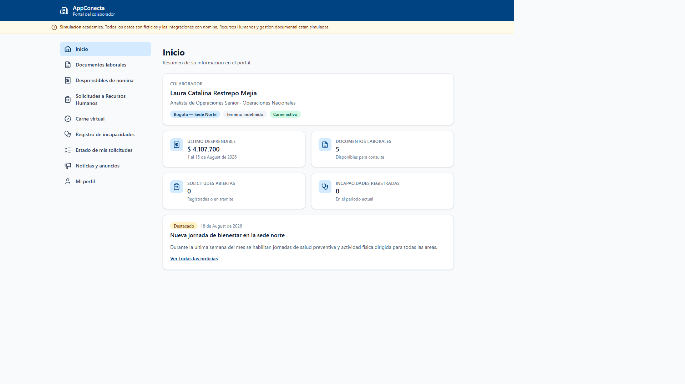
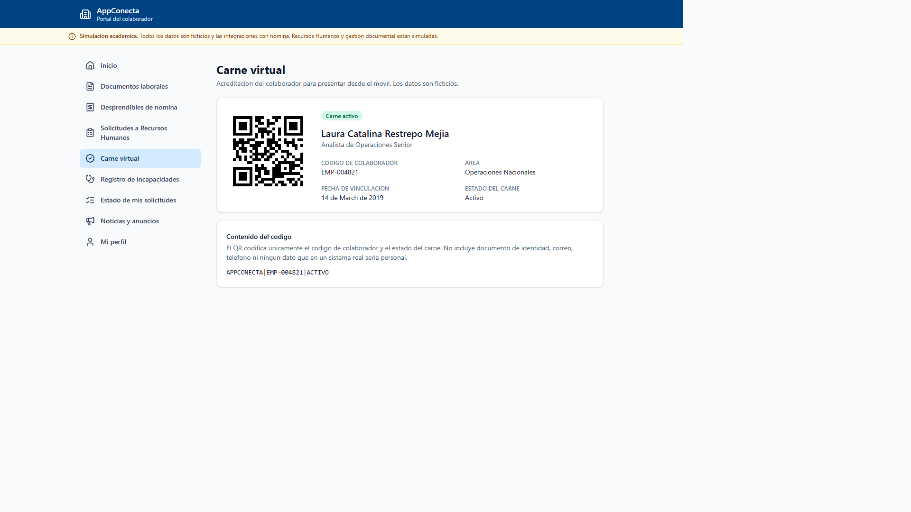

Miguel Santiago Acevedo Virgues · Julian Camilo Corredor Rojas · Brayan Estif Calderon Gomez
Gestión de Configuración y Mantenimiento de Software — Docente: Cesar Augusto Vega Fernandez
Simulación académica · datos y colaboradores ficticios
Portal del colaborador con un módulo legacy que concentra la mayor parte del riesgo de mantenimiento.
GitFlow liviano, Conventional Commits, SemVer y un pipeline sin secretos externos.
PWA con 9 secciones, pipeline de 7 verificaciones, despliegue en Pages e imagen en GHCR. v0.1.0 y v0.2.0.
13 pull requests con checks en verde, 6 baselines establecidas, 94 pruebas automatizadas, app desplegada.
Pull request · CI · GHCR · Pages
Más ramas y ceremonia, pero exige entregas formales y baselines auditables. No es superior en general.
Priorizamos métricas propias del módulo legacy en vez de bloquear la entrega buscando un ideal sin deuda.
Ver: docs/technical-debt-register.md
Cobertura y duplicación admiten un margen pequeño; complejidad y líneas del legacy, tolerancia cero.
Ver: metrics-baseline.json y el job metrics:gate en
ci.yml
Una sola identidad ejecuta y aprueba, por alcance académico. El control real es el pipeline, no un revisor.
Durante la construcción del módulo legacy identificamos y priorizamos 9 puntos de deuda técnica, con una baseline medible para intervenir en la Actividad 4.
| Indicador | v0.1.0 | v0.2.0 |
|---|---|---|
| Cobertura sentencias | 89.19 % | 90.02 % |
| Duplicación | 0.77 % | 0.71 % |
| Complejidad máx. | 26 | 26 — igual |
| Líneas del legacy | 580 | 580 — igual |
| Vulnerabilidades altas | 0 | 0 |
En criollo: agregamos el carné virtual (código nuevo) y el módulo viejo no mejoró ni empeoró — sigue exactamente igual de "enredado" que antes. Eso confirma que la deuda está encerrada ahí y no se contagia al resto de la app.
v0.2.0 medida: complejidad 26, 580 líneas, duplicación 0.71 %, cobertura 90.02 %.
Refactorizar el servicio legacy: separar persistencia, validación y reglas de negocio.
Correr npm run metrics (complejidad, duplicación, auditoría) y
npm run test:coverage otra vez, ya con el código refactorizado.
Tabla antes/después con variación real, sin valores objetivo fijados de antemano.
Por qué lo decimos así: no queremos mostrar una mejora inventada. El "antes" ya está medido y es real; el cambio y el "después" se hacen y se miden antes de la entrega del 28, no se están inventando ahora.

Dashboard en escritorio

Carné virtual con QR
Repositorio real. Pipeline real. Deuda documentada y medida. Intervención de la Actividad 4 en curso antes de la entrega.
github.com/llipiterdev/appconecta-scm